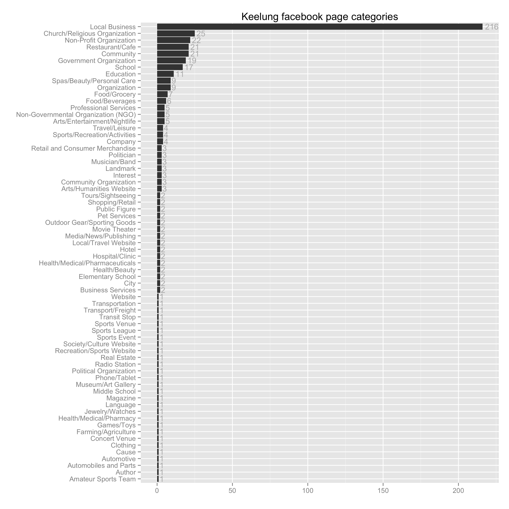

一、結合時事新聞、公共論壇、臉書、線上論壇之資料挖掘應用，用以檢測發掘可信賴並具參考價值之「城市網路形象」資訊與知識，用以建構提升跨域競爭力（北北基地區）之方式。
二、用設計科學研究方法，結合文字探勘以及社會網絡分析技術，建構一個城市品牌雛型，用並調整適當之城市（北北基地區）品牌傳播方式。
網路爬蟲（Web Crawler）
採用網路爬蟲技術，將社群討論平台內的公開文章全數截取下來之後，運用文本探勘（Text Mining）技術，分析文章討論串的主題、聲量、傳播程度，進而探討輿論主題的型態。
文本探勘（Text Mining）
使用開源斷詞程式「Jieba 結巴中文斷詞」，運用 Trie DAG 演算法及隱馬可夫模型 （HMM），將貼文文本取出中文單詞，並以 TF-ITF 算法計算出個別文章的關鍵詞彙 （keywords）。
文本中的高頻詞，移除掉中文的代名詞（例如：我們、那些）；語意連結詞（例如：然而、因為、雖然）；常用單位詞（例如：一些、一個）；以及其他對文意貢獻度較低的詞彙（例如：請問、謝謝、大家好），剩下的高頻詞彙就是對文本產生較大影響的對象，分析它們之間的聯繫（網絡相關矩陣）可以得到以詞彙為單位的文本內涵拆解，並藉由視覺化工具（R軟件裡面的`igraph`套件）快速得到文本的特徵。
鑑於網路平台的多樣性，本研究中主要以有效資訊傳播的主要網路管道作為探討對象。近來在公共議題討論或輿論活動的發生，以 Facebook 的傳播效果較大，其圖文分享的特性能讓使用者在短時間內瀏覽大量資訊，加上 Facebook 文章顯示的演算法可讓最新且較多人注意到（按讚）的訊息大量曝光，有使新議題快速發展的特性，但也因此容易被新議題取代而不易持久。
除此之外，台灣最大的電子佈告欄（BBS）——台大批踢踢實業坊（以下簡稱 PTT），則是另一種型態的社群聚落，因為文章的發佈和討論沒有經過演算法調整曝光率，而且是純文字介面，因此其文本型態相對會呈現較完整的議題討論。近來網路新聞的發達，在 PTT 上面也常見以新聞議題為主的討論。
在非人為操作的情況下 (例如按讚抽獎活動、假帳號灌水) ，網民在 Facebook 上對「議題」的態度表示，依數量多寡分別以「按讚」、「分享」、「留言」的方式呈現，雖然某種程度其態度強度會由於頻率增加而有稀釋效果，「按讚」可能只是表示「我看到了」；「分享」則是以自己為主體將訊息傳播出去，個人的態度強度更顯增加；而「留言」不僅表示看到了，而且原意將自己的意見貢獻在討論的文本中。儘管「留言」或「發文」的討論所表示的態度強度較大，但「按讚」是較常發生也較能觀察到態度的行為，因此以下的分析中，將以「按讚數」做為議題關注程度的指標，並以「分享數」作為議題傳播效果的指標。
下面以「基隆」為關鍵字搜尋 Facebook 的公開專頁，討論相關的專頁。綜觀所有查詢結果（圖1），屬於 Facebook 分類中的 Local Business 的專頁數量最多（216個），其次為 Church/Religious Organization （25個）和 Non-Profit Organization （22個）。累積討論數較高的專頁屬於個人經營的資訊交流平台，其中不乏美食討論類型的專頁。（表1）

圖1：以「基隆」為關鍵字搜尋 Facebook 的公開專頁——各類別的數量
表1：以「基隆」為關鍵字搜尋 Facebook 的公開專頁 (累積討論數前10的專頁)
| name | talking_about_count | like | 簡短說明 | 與基隆相關 | 官方經營 | |
| 1 | 基隆人說讚 | 5885 | 11307 | v | ||
| 2 | 基隆人踹共 | 5796 | 31840 | v | ||
| 3 | 雨港基隆 | 4278 | 72727 | 遊戲/玩具 | ||
| 4 | 基隆廟囗夜市 | 3423 | 19243 | v | facebook 自動建立頁面 | |
| 5 | 基隆美食 | 2202 | 19015 | 個人經營食記 | v | |
| 6 | 港灣城姬！基隆少女 | 2038 | 12485 | 基隆市動漫代言人 | v | |
| 7 | 基隆好美 | 1615 | 6545 | 攝影 | v | |
| 8 | 基隆旅遊網 | 1195 | 14705 | 基隆市觀光局 | v | v |
| 9 | 基隆警馨雲 | 1101 | 6314 | 基隆市警察局 | v | v |
| 10 | 早安基隆 | 762 | 7636 | 基隆相關資訊匯集 | v |
台大批踢踢實業坊（PTT）
在 PTT 上相較於其他熱門的討論版，有關基隆地方的討論就較不熱絡，但仍能觀察到一些特性：
表2：Keelung 板文章類別分佈（自2015年初至2015年9月）
| 文章類別 | 文章數 | 文章類別 | 文章數 | |
| [問題] | 222 | [協尋] | 3 | |
| [交易] | 175 | [租屋] | 3 | |
| [情報] | 77 | [食記] | 3 | |
| [分享] | 66 | [徵伴] | 2 | |
| [新聞] | 48 | [揪人] | 2 | |
| [閒聊] | 42 | [揪團] | 2 | |
| [徵求] | 20 | [遊記] | 2 | |
| [心情] | 18 | [３Ｃ] | 1 | |
| [贈送] | 12 | [代買] | 1 | |
| [美食] | 9 | [尋物] | 1 | |
| [徵人] | 6 | [廣宣] | 1 | |
| [出租] | 5 | [招募] | 1 | |
| [合購] | 5 | [搭車] | 1 | |
| [公告] | 4 | [故事] | 1 | |
| [共乘] | 4 | [比賽] | 1 | |
| [廣告] | 4 | [自介] | 1 |
Facebook 專頁：基隆人踹共——從訊息討論區延伸至社群
在2012年 Facebook 尚未非常盛行之時，「基隆潮很大」 (http://keelung-tide.com/) 為基隆網民討論地方議題的重要討論區，目前已為關站狀態，並將所有討論移至 Facebook 專頁「基隆人踹共」。當時運作方式為一般網民寄信給網站經營者發佈文章，底下網民使用 Facebook API 討論工具進行討論。
圖2：Facebook 專頁「基隆人踹共」讚數與分享數 (2014年9月至2015年9月期間)
「基隆人踹共」資訊交流平台中的討論，以生活事項居多，其中更以網民相片拍攝之連結最多（表3）。新聞連結的討論次之，純狀態發佈最少。
表3：「基隆人踹共」所有貼文媒體屬性
| 文章類型 | 文章數 |
| photo | 488 |
| video | 53 |
| link | 9 |
| status | 3 |
下表（表4）整理前20多按讚數之討論內容，約可將 Facebook 上的熱門輿情歸納為幾個面向：
表4：「基隆人踹共」自開專頁前20多按讚數之討論
| message | created_date | likes_count | link_description |
| Sandy Tsao說 哇 ，又遇到一個暖男101經祥豐街司機 ，這位司機是陳大鵬先生 ，祥豐市場站有個中風的阿伯柱著拐杖要上車 ，司機先生居然下車去扶阿伯上車耶 ，整車的歐里桑跟歐巴桑一直誇獎司機 ，司機先生還不好意思的說這是他應該做的 ，讚讚讚啦 ！！！ |
2015-05-14 | 2937 | (Photo) 公車 |
| Angelo Lin說 負責任的商家...QQ 辛苦了 |
2014-09-05 | 2419 | (Photo) 李鵠餅店 |
| 洪敦智說 一大早(還不到六點)大船就進來了^_^。 |
2015-09-02 | 2182 | (Photo) 基隆港郵輪攝影 |
| Yihao Chien說 在循環站等公車時、看到一臺602的公車有位先生抬著一部嬰兒車下來、想說是抱著嬰兒媽媽的老公、沒想到竟然是司機先生!!超級感動的>_<!! |
2015-05-19 | 2121 | (Photo) 公車 |
| 基隆到台北僅200人？基隆市議員駁斥：絕對不止 | 2015-03-17 | 1836 | 台北市副市長林欽榮今天表示，目前台北市國光客運西站部分，一天從基隆來的乘客只有200人，調整到南港轉運站轉乘一點都不會影響，引發外界譁然。基隆市政府人員說，林欽榮的資料與實際掌握的情況有落差，會提供資料給台北市參酌。「怎麼可能，我寧可相信他是口誤。」基隆市議員蔡適應說，根據國光客運在網路上公布的班次總表，基隆到台北火車去回就超過800班次，除非都開空車，否則絕對不止200人，林欽榮應該來基隆看一下每天有多少市民搭乘國光客運。 |
| 「基隆人還要活嗎？」國光客運擬改停南港 基隆人反彈 | 2015-03-16 | 1780 | 台北市有將國光客運台北西站的乘車位置，改到10公里外南港的構想，基隆市數萬通勤族未來將從直達變轉乘，抱怨相當不便，時間、金錢成本也相對提高，通勤族直批罔顧老百姓權益，怒喊「基隆人還要活嗎？」國光客運行駛基隆經高速公路到台北西站的路線，一天往返班次高達800班，是基隆鄉親重要的通勤工具，最近北市規劃拆除西站，調整到南港轉乘，讓通勤民眾感到相當不方便。 |
| Sandy Tsao說 今天下午搭101和平島經祥豐街的公車遇到一個好棒的司機 ，這是我從小到大在基隆搭公車第一次遇到這麼好的司機 ，會對每個上車的乘客說你好 ，對老人家上車也很有耐心的等坐穩或站穩才開車 ，開車也不會急踩急煞 ，公車處應該好好表揚這位這麼棒的司機！ |
2015-05-08 | 1728 | (Photo) 公車 |
| 沈皇源說 身為基隆人你看過清晨海洋廣場這麼美過嗎?攝于104.06.25 AM5.20分 |
2015-06-27 | 1641 | (Photo) 海洋廣場攝影 |
| 基隆舊火車站熄燈 鐵道迷搶拍末班車 | 2015-06-28 | 1612 | 新站明天啟用 台鐵昨今進行換軌基隆火車站新站將於明日啟用，台鐵利用週末假日進行換軌作業，昨天凌晨最後一班列車抵達基隆車站，吸引大批鐵道迷搶拍列車進站的最後身影。 |
| 基隆躍上微軟全球廣告 網友喻「另一個台灣之光 | 2015-02-26 | 1530 | 微軟MICROSOFT2015的全球形象廣告，日前被眼尖網友發現，影片中出現了八斗子軟絲產房、海洋科技博物館、廟口、市區街景等基隆知名景點，將基隆喻為「另一個台灣之光」。網友Flyingnow在Mobile01發文，表示在微軟2015的全球廣告中，影片一開始的海底世界就是八斗子軟絲復育情形，之後的室內互動空間則是以海科館現有的科技展示未來科技，包括廟口、市區也都入鏡。 |
| 扯！基隆災情好幾起 市府通報件數竟是「零」 | 2015-08-07 | 1484 | 中度颱風「蘇迪勒」來襲，基隆市大概是目前全國最「平靜」的城市，因為府方與媒體間的群組內，災情通報件數目前為「零」！事實上，光是記者現在掌握到的訊息，即有3顆路樹遭強風吹倒、一盞路燈倒塌、一個電線桿搖搖欲墜，但是基隆市政府官員完全未通報此事，甚至連北寧路封路一事，主管機關交旅處都沒說明，最後還是工務處轉報，民眾才得知此事。 |
| Yj Hsu說 8/8颱風，8/9一早到外木山，已經這麼乾淨了。 環保局，清潔人員，辛苦了。 |
2015-08-09 | 1463 | (Photo) 外木山 |
| 雞籠中元祭放水燈大遊行 萬人空巷 | 2015-08-27 | 1462 | 傳承161年的雞籠中元祭重頭戲放水燈大遊行，今晚在基隆市區熱鬧登場，在煙火齊放、港區船隻一同鳴笛下，鑼鼓喧天的遊行隊伍一路綿延好幾公里，除了各姓燈首，還有魚陣、舞獅、幽靈船長等車龍，吸引民眾夾道圍觀，除了躲在騎樓下看遊行人潮外，撐傘、或穿雨衣看遊行的也大有人在，市民與遊客不想錯過地方年度盛事，爭相用相機或手機記錄。今年首次邀請日本卡通明星菇菇登上主題花車當嬌客，輪值主普的江姓宗親會，打造「海洋之都」、「飛龍在天」等6輛電動花車，增添今年遊行的看頭。 |
| 基隆廟口蝦仁羹名攤遭訴 拒賣單點滷肉飯 | 2015-07-18 | 1324 | 很多民眾到基隆廟口夜市，都會到一家蝦仁羹光顧，因為這裡的豬腳蝦仁羹還有滷肉飯都非常有名，不過台北一位王先生投訴，昨天晚上想要單買一碗滷肉飯外帶，而他明明看到攤子上都還有飯，店家卻說沒飯了不賣，讓他質疑業者是不是想多賺一點，拒絕單賣滷肉飯，不過店家解釋，當時白飯還沒有悶熟，擔心客人吃了會拉肚子，才沒有賣給客人。 |
| Steven Yang說 今天 (2015-04-06) 路過基隆海洋廣場，發現海面終於清理乾淨了，沒看到半點垃圾、也聞不到過往的臭味。這才像是國際港都的樣子。基隆市繼續加油~ |
2015-04-06 | 1296 | (Video) 海洋廣場 |
| 基隆東岸高架橋貨櫃車翻 物品散落車道 | 2015-03-31 | 1286 | 「砰！」今天近午，一輛貨櫃車行經基隆市東岸高架橋時突然失控翻覆，後載貨櫃左傾翻覆，「卡」在水泥護欄上，貨櫃破裂，櫃內物品散落下方車道上，所幸未波及其他車輛，造成國道一號北上車輛嚴重受阻。警方調查，這輛失控貨櫃車上午11時50分，行經基隆市東岸高架橋時，疑因在過彎時，車速過快，整輛車左傾翻覆，駕駛座擋風玻璃破碎，駕駛自行爬出車外，幸運獲救。 |
| 賴正庸站路口 落選謝票一個月【自由時報】 | 2014-12-17 | 1132 | (Photo) |
| 基隆舊火車站將變裝 打造幾米風 | 2015-04-17 | 1125 | 基隆新火車站即將在6月1日啟用，舊站市府接管，將仿宜蘭幾米廣場營造成公共藝術展場，一到基隆就有亮點。基隆新火車站6月1日啟動，除了5月30、31日軌道切換，基隆站停駛2天外，鐵工局將在舊站搭建空橋，方便旅客進出。 |
| 暈！「停車塔」式迴旋車道 轉300m上山 【TVBS】 | 2014-12-05 | 1123 | (Photo) |
Facebook 專頁：港灣城姬！基隆少女——虛擬代言人
港灣城姬！基隆少女，是基隆市的吉祥物企劃案，Facebook 專頁創建一開始沒有很受關注按讚數不高，直到 2015-07-27 才有爆量的分享。在下圖（圖3）整理中可發現，雖然按讚數維持一定的數量，但是分享數有逐漸減少的趨勢，可能和專頁管理員的議題設定相關。
圖3：Facebook 專頁「港灣城姬！基隆少女」讚數與分享數 (自2015年7月底創建至9月期間)
表5：「港灣城姬！基隆少女」自開專頁前20多按讚數之討論
| message | created_date | likes_count | link_description |
| 哇！！基隆少女上新聞耶！ | 2015-08-17 | 873 | 青年設計動漫人 行銷基隆觀光。分享在地青年廖志祥集結一群喜好動漫的同好，深感基隆吉祥物不夠多元，以基隆特色吉古拉、黑鳶為主題，設計推出「基隆少女」，行銷在地觀光，人形立牌擺在旅遊服務中心前，吸引遊客拍照留念。 |
| 颱風來了!!外面風強雨大~可以的話各位朋友不要在外爬爬走~在家看看電視~出門在外的朋友要特別留意週遭狀況注意安全噢 『港灣城姬!基隆少女』提醒您^^ 歡迎分享出去關心親朋好友噢 繪者:AKARI |
2015-08-07 | 872 | NA |
| 基隆少女人物介紹『part.2』 (姊姊)雨鳶 生日:12月30日 血型:A型 體重:47公斤 簡介: 雨鳶，取自雨港中飛翔的黑鳶，紫色的頭髮散發著貴族般優雅的氣息，有點害羞又如小動物般容易受到驚嚇，喜歡基隆特有的各個海灣風景，希望能讓大家都因基隆的天然美景愛上基隆。 (黑鳶:老鷹的一種，是基隆市的市鳥) |
2015-08-03 | 861 | NA |
| 今天來分享一個很漂亮的成品～新版的壓克力立牌終於做出來了～不過因為我們堅持好的品質～工廠有可能不及出貨～現場可能改成預購制 FF26等你來擁抱基隆少女喔>< |
2015-08-26 | 686 | NA |
| 雨鳶立牌圖搶先看!!! 什麼時候能順利登場呢~好期待 |
2015-08-04 | 621 | NA |
| 聽說前天是吉古拉的生日~但是因為剛推出基隆少女~要做的事情太多來不及幫吉古拉慶生(哭哭~ 今天來PO張可愛的吉古拉吧^^ 聽說吉古拉滑溜溜的(小編筷子夾不起來~ 呈上滑溜溜的吉古拉>< 繪者:AKARI |
2015-08-12 | 610 | NA |
| 今天在巴哈姆特發現一個好厲害的朋友創作吉古拉，我們也歡迎大家在不違反公序良俗且不傷害基隆少女形象為提前進行創作噢 | 2015-08-19 | 602 | NA |
| 基隆少女人物介紹『part.1』 吉古拉 生日:8月10日 血型:B型 體重:40公斤 簡介:年輕可愛的國中生吉古拉，非常喜愛美食 因在地基隆人都稱做竹輪為『吉古拉』，所以希望 能夠把她最喜歡的基隆美食介紹給所有人。 |
2015-07-27 | 571 | NA |
| 近日有民眾跟我們說：桌上型立牌的文字框設計太細，壓克力容易斷掉，是否能針對這一點進行改善？ ============== 我們會在設計形狀時加以注意～下一批的壓克力立牌將進行改版～感謝民眾的提醒～你們的建議使我們不斷的學習～謝謝 |
2015-08-10 | 562 | NA |
| 吉古拉吃吉古拉~ 聽說下週又有雙颱要形成(驚! 颱風天還是躲在家裡吃吉古拉+泡麵好了(=￣ω￣=) 呈上好吃的吉古拉吃著好吃的吉古拉? 繪者:AKARI |
2015-08-14 | 522 | NA |
| 接著來介紹我們的人設繪師 『Hikaru T.K.』 Hikaru(ひかる)是日文:『光』的意思 所以可以稱他為『小光』或『光君』~ T.K.也同樣是同人社團艾綺花園工作室的繪師~ 擅長畫Q版、萌物與肌肉(恩?) ------------------------------- 繪師是個很好相處又很優秀的大學生~ 如果在展覽遇到歡迎認識我們的繪師喔>< Hikaru T.K.的噗浪:http://www.plurk.com/theskiriya_hikaru |
2015-08-04 | 486 | NA |
| 今天基隆少女也在花博爭艷館等候大家來到噢 | 2015-08-30 | 439 | NA |
| 今天基隆遊街活動～不知道大家有沒有發現吉古拉出現在基隆德周TV Game呢？ | 2015-08-27 | 419 | NA |
| 聽說明天的台中動漫力是個試賣的日子 限量15個的吉古拉桌上型小立牌是不是很可愛呀~ 可以放桌面還可以自己買雙面膠黏汽車或機車XD(小心被偷) 搶不到的朋友靜待FF26的登場吧^^東西應該會多很多吧~ 吉古拉的大立牌也會完整的出現在台中動漫力喔>w< 台中的朋友歡迎亂入拍照 ※再次聲明!基隆少女為民間團體創作~本團隊之所有創作及發言皆不代表市府立場※ |
2015-07-31 | 417 | NA |
| 最近港灣城姬的大家都在為FF和中元祭做準備~比較沒時間分享新資訊給大家~好在我們有喜愛基隆少女的粉絲們~讓我們有不斷努力的動力~分享小編在噗浪獲得網友們的熱情二創吧 | 2015-08-25 | 413 | NA |
| 基隆少女FF週邊part.2今天終於收到貨了!!!! 吉古拉&雨鳶雙面壓克力鑰匙圈~哈嘶~哈嘶~好可愛阿! ------------------------- 聽說拆散姊妹購買的話是一個:60元 願意讓姊妹們在一起的話就是一組:100元 ---- 歡迎看看噢 (壓克力鑰匙圈購買時外表會有一層塑膠保護模~想要讓吊飾批咖批咖的亮晶晶就要把保護膜撕掉噢(∩^o^)⊃━☆ﾟ.*･｡) ---- FF26攤位位置 第一天:L15.L16 第二天:K35.K36 |
2015-08-27 | 408 | NA |
| 中元祭到了！大家出遊交通要注意安全～ | 2015-08-17 | 396 | NA |
| 小編終於抓到台視的新聞影片連結了XD | 2015-08-18 | 361 | 立即訂閱「台視新聞」頻道(http://www.youtube.com/ttvnewsview)，隨時掌握國內外最新、最熱、最夯的新聞影音。 台視新聞 新聞官網 - http://www.ttv.com.tw/news/ 影音頻道 - http://www.youtube.com/ttvnewsview FB粉絲... |
| 今天來介紹我們的原設定人物和人形立牌繪師 『AKARI』 AKARI是同人社團艾綺花園工作室的繪師在同人社團有許多的動漫二次創作除了電腦繪圖以外，AKARI也參加擅長比較正統的美術，如:素描、炭畫、水彩、油畫等~真是非常的厲害>w< |
2015-08-04 | 342 | NA |
| 感謝兩位可愛的coser：夜水(圖左)與艾依(圖右) 也跟吉古拉合照～小編快被萌翻了 (●♡∀♡) |
2015-08-02 | 337 | NA |
PTT：Keelung
自2015年初在 Keelung 板上的所有文章，初步先篩選幾項屬於輿情討論性質的文章類別（此處的類別為貼文者自訂）：[情報]、[分享]、[新聞]、[問題]共四種類別的貼文，經由文本的斷詞和篩選取出高頻單詞，將不同單詞頻率以文字雲方式呈現（圖4）
圖4：PTT基隆板 (Keelung) 自2015年初至2015年9月所有文章文字雲
觀察圖 5，可以發現前面這一百個高頻詞被劃分為多個類別，這些類別項目數量不一，有些類包含較多單詞節點。將各類內容整理如下：
圖5：PTT Keelung 板自2015年初至2015年9月間，前 100 高頻詞的關係網絡圖